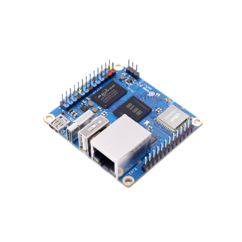

Proyecto Linux Embebido en OrangePi Zero 3 - Allwinner H618
En esta guía aprenderemos a construir un sistema operativo Linux embebido en un OrangePi Zero 3 utilizando el procesador Allwinner H618.

Primeros pasos
Para iniciar crea un directorio llamado linux-dev y cambia al directorio
mkdir linux-dev
cd linux-dev
A continuacion se enumeran la serie de pasos de desarrollo del proyecto:
1. Descargar repositorios
git clone https://github.com/u-boot/u-boot.git --depth 1
git clone https://github.com/ARM-software/arm-trusted-firmware.git --depth 1
git clone -b orange-pi-6.1-sun50iw9 https://github.com/orangepi-xunlong/linux-orangepi.git --depth 1
# O elige la rama orange-pi-5.13-sunxi64
2. Construir las imágenes Docker
docker build -t uboot-builder docker/
docker build -f docker/Dockerfile.kernel -t linux-kernel-dev docker/
3. Ejecutar contenedor con volumen montado
# Opción 1: Contenedor temporal
docker run -it --rm -v $PWD:/home/builder uboot-builder bash
# Opción 2: Contenedor persistente con uboot-builder
docker run -it --name linux-dev --privileged -v $PWD:/home/builder uboot-builder bash
# Opción 3: Contenedor persistente con linux-kernel-dev
docker run -it --name linux-dev --privileged -v $PWD:/home/builder linux-kernel-dev /bin/bash
Iniciar el contenedor linux-dev existente
docker start -ai linux-dev
4. Compilación del bootloader
Compilar ARM Trusted Firmware (ATF)
cd arm-trusted-firmware
make PLAT=sun50i_h616 bl31
Copiar bl31.bin a la raíz de U-Boot
cp build/sun50i_h616/release/bl31.bin ../u-boot/
Compilar U-Boot
cd ../u-boot
make orangepi_zero3_defconfig
make -j$(nproc) CROSS_COMPILE=aarch64-linux-gnu-
5. Grabar en la tarjeta SD
sudo dd if=u-boot-sunxi-with-spl.bin of=/dev/sdb bs=1024 seek=8 status=progress
sync
6. Debug y comunicación serial
Verificar el dispositivo USB-Serial
sudo dmesg | grep -i tty
Salida esperada:
usb 3-2: ch341-uart converter now attached to ttyUSB0
Nota
La salida puede variar porque el dispositivo USB-Serial puede tener diferentes nombres en diferentes sistemas.
Conectar por serial
sudo screen /dev/ttyUSB0 115200
Para salir de screen: Ctrl + A, luego k
7. Compilación del kernel
Compilar Device Tree
make ARCH=arm64 CROSS_COMPILE=aarch64-linux-gnu- \
allwinner/sun50i-h618-orangepi-zero3.dtb
Configurar el kernel
make ARCH=arm64 CROSS_COMPILE=aarch64-linux-gnu- linux_sunxi64_defconfig
# Para compilar y ver el menuconfig
make ARCH=arm64 CROSS_COMPILE=aarch64-linux-gnu- menuconfig
Compilar el kernel
make -j$(nproc) ARCH=arm64 CROSS_COMPILE=aarch64-linux-gnu- Image modules
Compilar todo junto (opción recomendada)
make -j$(nproc) ARCH=arm64 CROSS_COMPILE=aarch64-linux-gnu- Image dtbs modules
Compilar boot.cmd
mkimage -C none -A arm64 -T script -d boot.cmd boot.scr
Para instalar los modulos en rootfs
make ARCH=arm64 CROSS_COMPILE=aarch64-linux-gnu- modules_install INSTALL_MOD_PATH=/mnt/rootfs